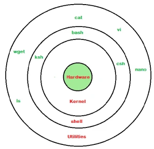

Linux Shells
If you are using any major operating system you are indirectly interacting to shell. If you are running Ubuntu, Linux Mint or any other Linux distribution, you are interacting to shell every time you use terminal. In this article I will discuss about linux shells and shell scripting so before understanding shell scripting we have to get familiar with following terminologies:
- Kernel
- Shell
- Terminal
What is Kernel
The kernel is a computer program that is the core of a computer’s operating system, with complete control over everything in the system. It manages following resources of the Linux system –
- File management
- Process management
- I/O management
- Memory management
- Device management etc.
It is often mistaken that Linus Torvalds has developed Linux OS, but actually he is only responsible for development of Linux kernel.
Complete Linux system = Kernel + GNU system utilities and libraries + other management scripts + installation scripts.
What is Shell
A shell is special user program which provide an interface to user to use operating system services. Shell accept human readable commands from user and convert them into something which kernel can understand. It is a command language interpreter that execute commands read from input devices such as keyboards or from files. The shell gets started when the user logs in or start the terminal.
 Linux shellShell is broadly classified into two categories –
- Command Line Shell
- Graphical shell

In above screenshot “ls” command with “-l” option is executed. It will list all the files in current working directory in long listing format. Working with command line shell is bit difficult for the beginners because it’s hard to memorize so many commands. It is very powerful, it allows user to store commands in a file and execute them together. This way any repetitive task can be easily automated. These files are usually called batch files in Windows and Shell Scripts in Linux/macOS systems.
Graphical Shells
Graphical shells provide means for manipulating programs based on graphical user interface (GUI), by allowing for operations such as opening, closing, moving and resizing windows, as well as switching focus between windows. Window OS or Ubuntu OS can be considered as good example which provide GUI to user for interacting with program. User do not need to type in command for every actions.A typical GUI in Ubuntu system –
There are several shells are available for Linux systems like –
- BASH (Bourne Again SHell) – It is most widely used shell in Linux systems. It is used as default login shell in Linux systems and in macOS. It can also be installed on Windows OS.
- CSH (C SHell) – The C shell’s syntax and usage are very similar to the C programming language.
- KSH (Korn SHell) – The Korn Shell also was the base for the POSIX Shell standard specifications etc.
Each shell does the same job but understand different commands and provide different built in functions.
Shell Scripting
Usually shells are interactive that mean, they accept command as input from users and execute them. However some time we want to execute a bunch of commands routinely, so we have type in all commands each time in terminal.
As shell can also take commands as input from file we can write these commands in a file and can execute them in shell to avoid this repetitive work. These files are called Shell Scripts or Shell Programs. Shell scripts are similar to the batch file in MS-DOS. Each shell script is saved with .sh file extension eg. myscript.sh
A shell script have syntax just like any other programming language. If you have any prior experience with any programming language like Python, C/C++ etc. it would be very easy to get started with it.
A shell script comprises following elements –
- Shell Keywords – if, else, break etc.
- Shell commands – cd, ls, echo, pwd, touch etc.
- Functions
- Control flow – if..then..else, case and shell loops etc.
Why do we need shell scripts
There are many reasons to write shell scripts:
- To avoid repetitive work and automation
- System admins use shell scripting for routine backups
- System monitoring
- Adding new functionality to the shell etc.
Advantages of shell scripts
- The command and syntax are exactly the same as those directly entered in command line, so programmer do not need to switch to entirely different syntax
- Writing shell scripts are much quicker
- Quick start
- Interactive debugging etc.
Disadvantages of shell scripts
- Prone to costly errors, a single mistake can change the command which might be harmful
- Slow execution speed
- Design flaws within the language syntax or implementation
- Not well suited for large and complex task
- Provide minimal data structure unlike other scripting languages. etc